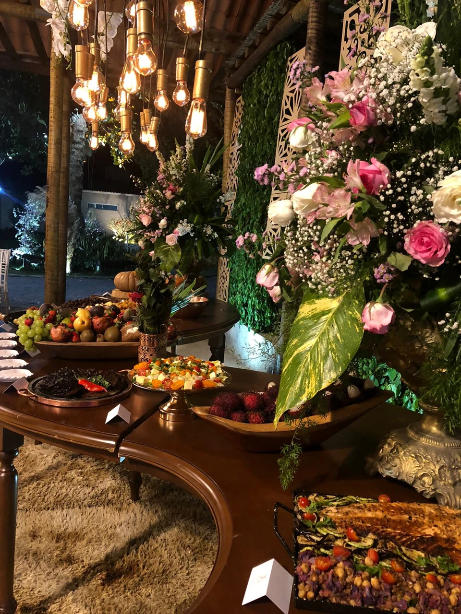
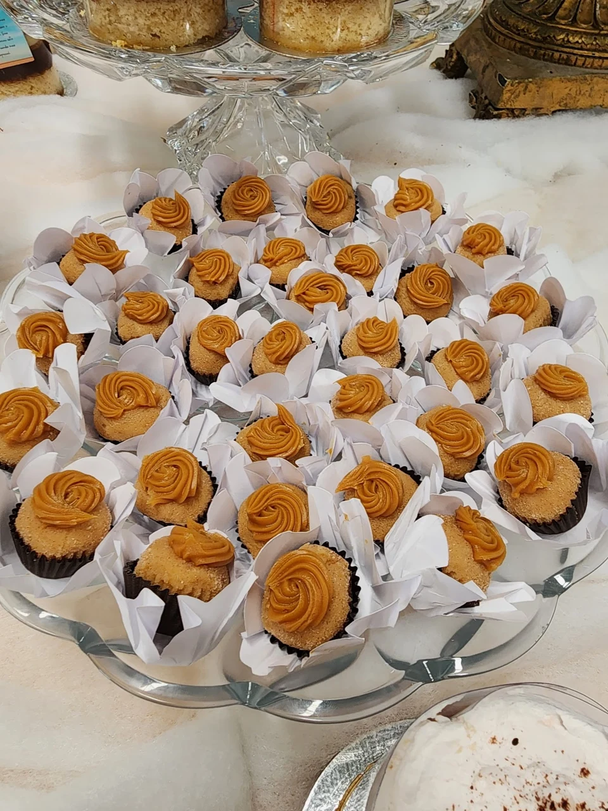
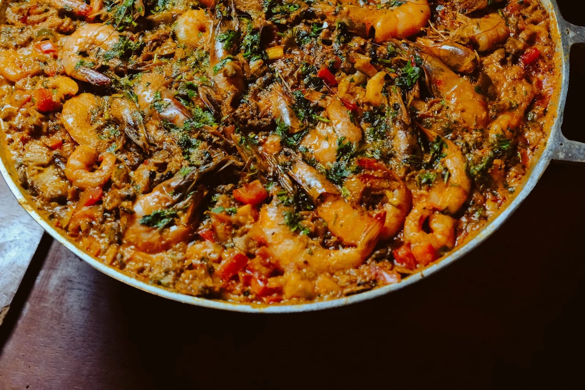
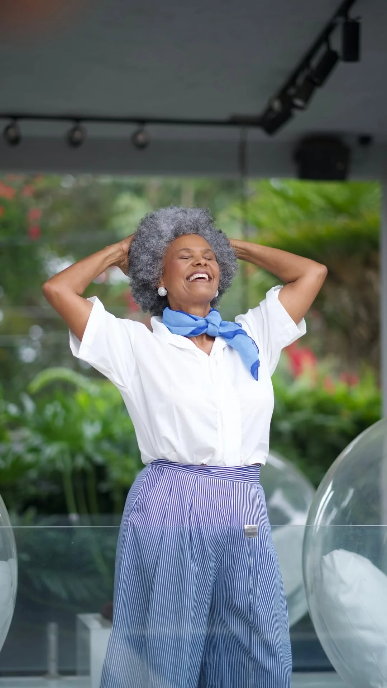
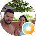
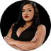

Casamentos
Uma mesa que reúne as referências dos noivos. Carne assada do sertão e sabores do mar já dividiram um mesmo cardápio.
Orçar meu casamentoGastronomia para eventos
Buffet para casamentos, festas e encontros em Feira de Santana. Converse com Lêda sobre um cardápio que combine com a sua celebração.
 Feira de Santana, Bahia
Feira de Santana, Bahia
O que servimos
Dos pratos que lembram casa à mesa de sobremesas, cada escolha começa com a história do seu evento.

Uma mesa que reúne as referências dos noivos. Carne assada do sertão e sabores do mar já dividiram um mesmo cardápio.
Orçar meu casamento
Taças de frutas, cores e diferentes texturas dão à sobremesa seu próprio lugar na celebração.
Orçar minha mesa
Conte quem vai se reunir, onde será a festa e quais sabores gostaria de servir. Esses detalhes orientam a conversa com Lêda.
Orçar meu evento
Sobre Lêda
Nordestina e orgulhosa de sua trajetória, Lêda Freitas leva sua identidade para a cozinha. À frente do buffet em Feira de Santana, prepara mesas para casamentos, festas e encontros.
Para Lêda, pensar um cardápio começa por conhecer quem vai celebrar. As preferências, as lembranças e as referências culturais de cada cliente ajudam a escolher os sabores que chegam à mesa.
Conheça mais sobre LêdaGaleria do buffet
Relatos de quem celebrou
As palavras de quem confiou seus momentos especiais ao buffet de Lêda.

Avaliação no Google
“Falar de Leda é falar de nós, dos nossos sonhos, das nossas realizações em forma de sentimento.”
“Leda não mede esforços para concretizar os desejos. Leda não mede esforços para colocar a nossa alma em cada uma das digitais que ela deixa nos nossos planos!”
Avaliação no Google
“Eu sonhava com algo bem personalizado, que pudesse mostrar a minha história e a do meu marido, sem clichês. Leda trouxe exatamente o que eu sonhava.”
“Pedaços da nossa história estavam escritos no incrível buffet que ela preparou com coração a cada detalhe!”
Avaliação no Google
“Desde o primeiro momento ficamos apaixonados só de pensar que seria um buffet personalizado e do nosso jeitinho.”
“Foi uma surpresa em cada detalhe, em cada sabor. Foi tudo muito perfeito. Atendimento de excelência!!”
Avaliação no Google
“Desde a 1ª reunião super atenciosa, ouve de fato o que os noivos querem, proposta de cardápios personalizados que era o que eu buscava.”
“Na verdade superou todas as nossas expectativas. E ainda nos preparou uma surpresa linda durante a festa. Buffet sensacional, comida deliciosa!”
Avaliação no Google
“Lêda é a verdadeira Idealizadora de Sonhos. Foi uma experiência além da expectativa, Leda conseguiu transformar nossas ideias e atender a cada pedido de forma delicada e cheia de amor.”
“Nunca vamos esquecer o quanto sua presença nesse momento especial fez a diferença.”

Avaliação no Google
“Lêda é incrível, faz tudo com muito amor e dedicação, tem todo aquele cuidado de personalizar do jeitinho que você ama.”
“Traz aquela memória afetiva através das comidas, foi uma honra ter o Buffet do meu casamento feito por ela.”
Monte seu pedido de orçamento
Dúvidas frequentes
Escolha a ocasião e informe uma estimativa de convidados no formulário. Depois, envie a mensagem pelo WhatsApp para conversar sobre as opções e receber uma proposta.
Você pode pedir um orçamento inicial mesmo com a data em aberto. Para consultar a disponibilidade e combinar a reserva, a equipe precisará saber o dia da celebração.
O buffet atende casamentos, festas e encontros. Conte à equipe como será sua celebração para conversar sobre as opções.
Compartilhe suas preferências, o tipo de evento e a estimativa de convidados. A equipe poderá conversar sobre as opções para sua celebração.
O orçamento depende dos detalhes do evento. Envie as informações pelo formulário ou converse com a equipe no WhatsApp para solicitar uma proposta.
Entre em contato assim que tiver uma previsão para o evento. A equipe poderá consultar a agenda e orientar sobre os próximos passos.
Informe a cidade e o local do evento para que a equipe avalie as condições de atendimento.
O buffet fica em Feira de Santana, na Bahia. Informe o local do evento para consultar as condições de atendimento com a equipe.
Localização e atendimento
Estamos em Feira de Santana. Fale com a equipe antes da visita para combinar o atendimento.
Rua Barra do Mendes, 30
Mangabeira, Feira de Santana, BA
Consulte os dias e horários disponíveis pelo WhatsApp.
Tire suas dúvidas e converse sobre a sua celebração.
 Conversar pelo WhatsApp
Conversar pelo WhatsApp